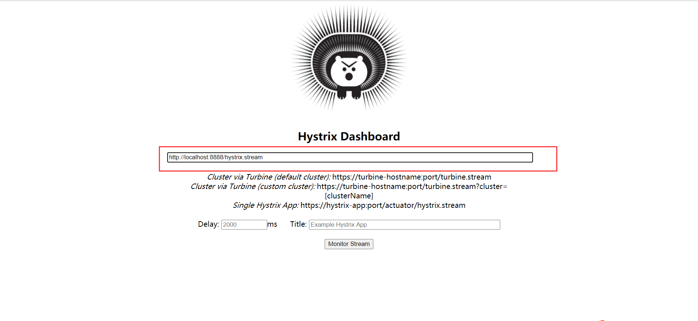
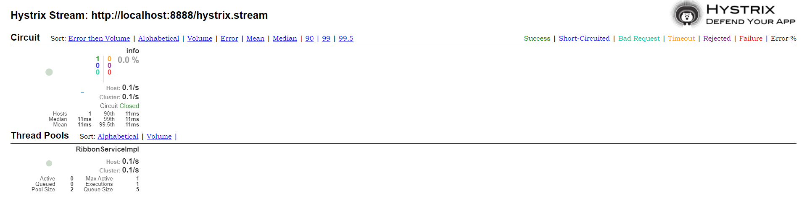

hystrix
- hystrix监控和断路器，我们只需要在服务接口上添加Hystrix标签，就可以实现对这个接口的监控和断路器功能
- Hystrix dashboard控制面板，提供了一个界面，可以监控各个服务上的服务调用所消耗的时间等等。
- Hystrix Turbine监控聚合，使用Hystrix监控，我们需要打开每一个服务实例的监控来查看，而Turbine可以帮助我们把所有的服务实例的监控信息聚合到一个地方统一查看，这样就不需要挨个打开一个个的页面一个个查看。
为什么需要断路器功能
在微服务架构中，我们呢将业务拆分成一个个的服务，服务于服务之间可以相互调用。为了保证其高可用，单个服务又必须集群部署，由于网络原因或者自身的原因，服务并不能保证100%可用，如果单个服务出现问题，调用这个服务就会出现网络延迟，此时若有大量的网络请求涌入，会形成任务积累，导致服务瘫痪，甚至导致服务“雪崩”，为了解决这个问题，就出现断路器模型。
Hystrix作用
断路器机制：当Hystrix command请求后端服务失败数量超过一定比例(50%)，断路器会切换到开路状态(open)，这时所有请求会直接失败而不会发送 到后端服务，断流器保持在开路状态一段时间后(默认5秒)，自动切换到半开路状态(half-open)，这时会判断下一次请求返回情况，如果请求成功，断路器切回闭路状态(closed)，否则重新切换到开鲁状态(open)，Hystrix的断路器就像我们家庭电路中的保险丝，一旦后端服务不可用，断路器会直接切断请求链，避免发送大量无效请求影响系统吞吐量，并且断路器有自我检测并恢复的能力。
fallBack: Fallback相当于是降级操作，对于查询操作，我们可以实现一个fallback方法，当请求后端服务出现异常的时候，可以使用fallback方法返回的值，fallback方法的返回值一般是设置的默认值或者来自缓存。
资源隔离： 在Hystrix中，主要通过线程池来实现资源隔离，通常在使用的时候我们会根据调用的远程服务划分出多个线程池，例如调用产品服务的command放入A线程池，调用账户服务的Command放入B线程池，这样做的主要优点是运行环境被隔离开了，这样就算调用服务的代码存在bug或者其他原因导致自己所在线程池被耗尽时，不会对系统的其他服务造成影响，但是带来的代价就是维护多个线程池会对系统带来额外的性能开销。
feign继承Hystrix
- 如果请求失败，断路器检测到超时，那么feign会做重试。
Hystrix的监控
1 | @EnableEurekaClient |
访问：http://localhost:8888/hystrix.stream
会看到都是ping的打印，这是因为我们还没有进行任何访问，访问http://localhost:8888/info 再去看就会发现不会打印ping了。
Hystrix Dashboard
@EnableHystrixDashboard 注解表示开启可视化监控。
访问路径：http://localhost:8888/hystrix

监控指标：
